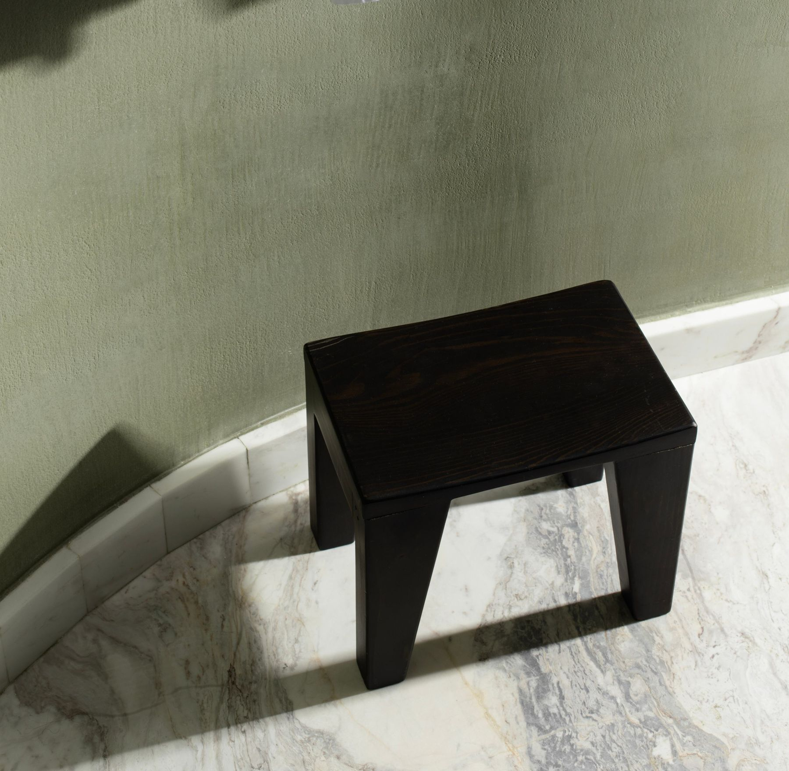
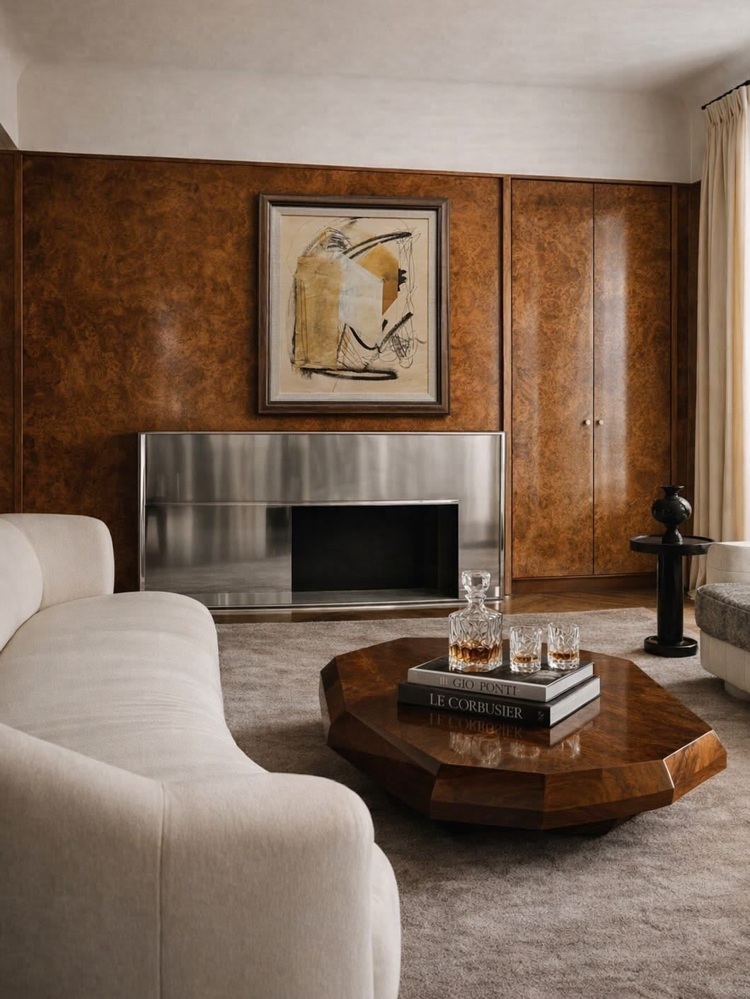
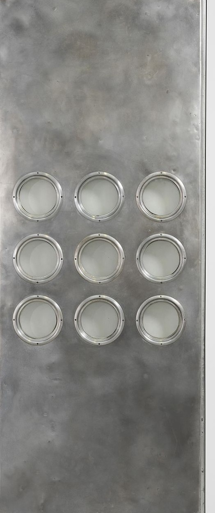
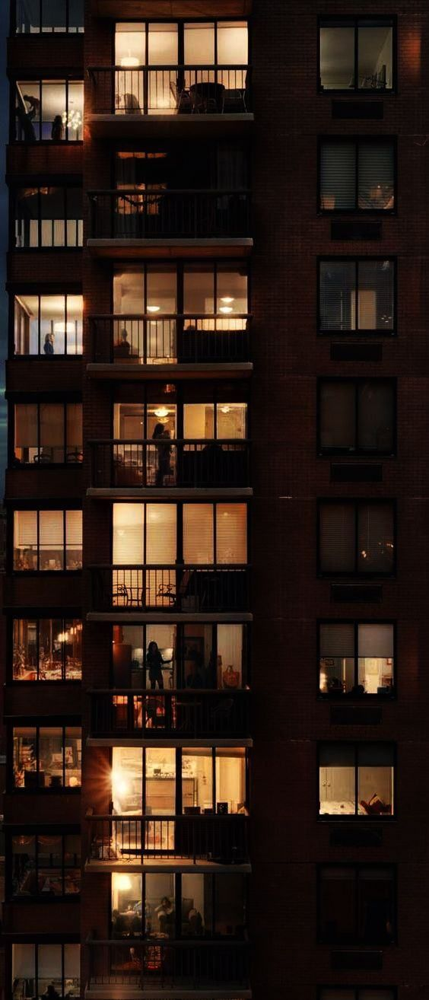
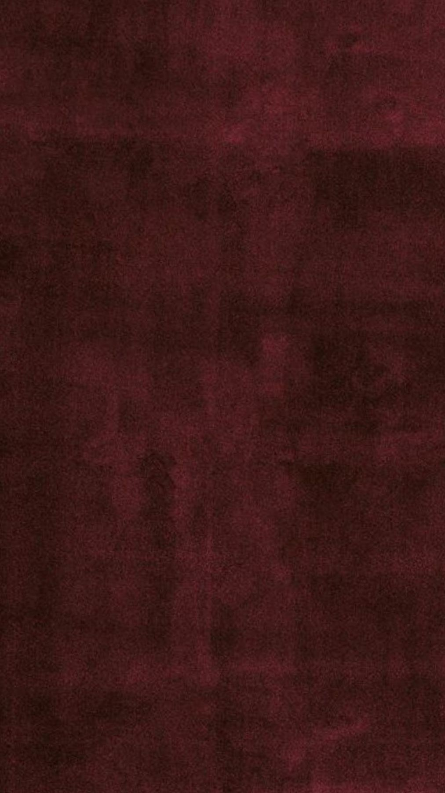
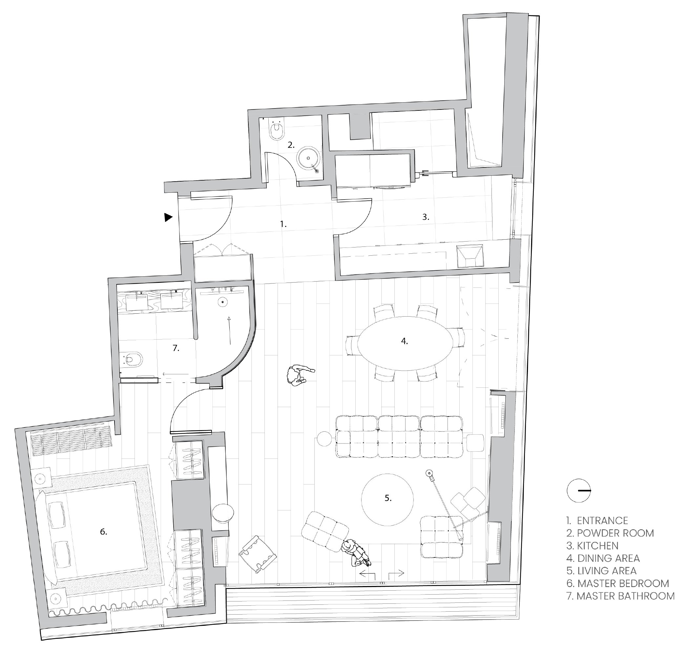
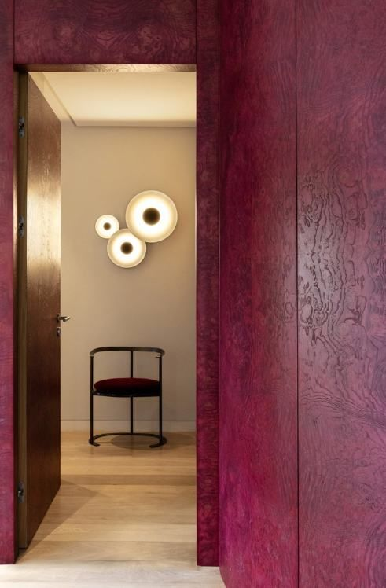
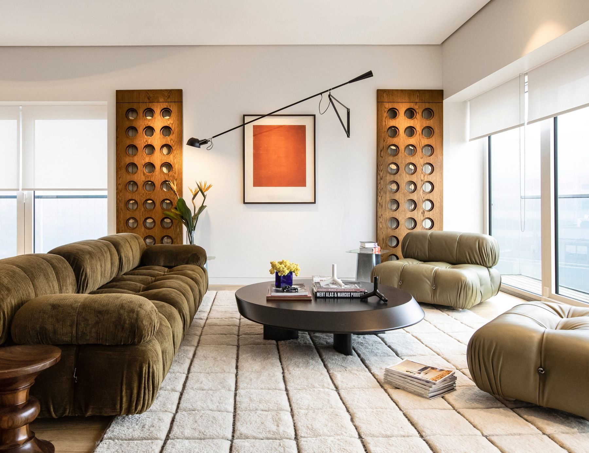
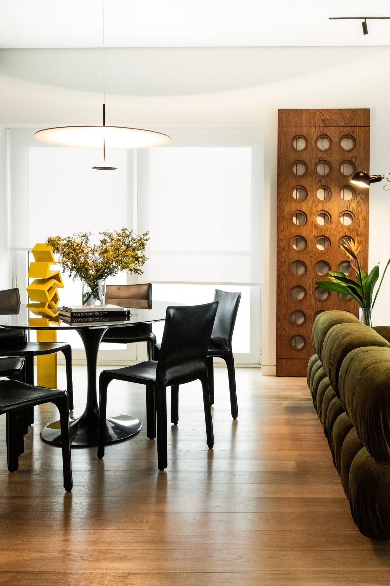
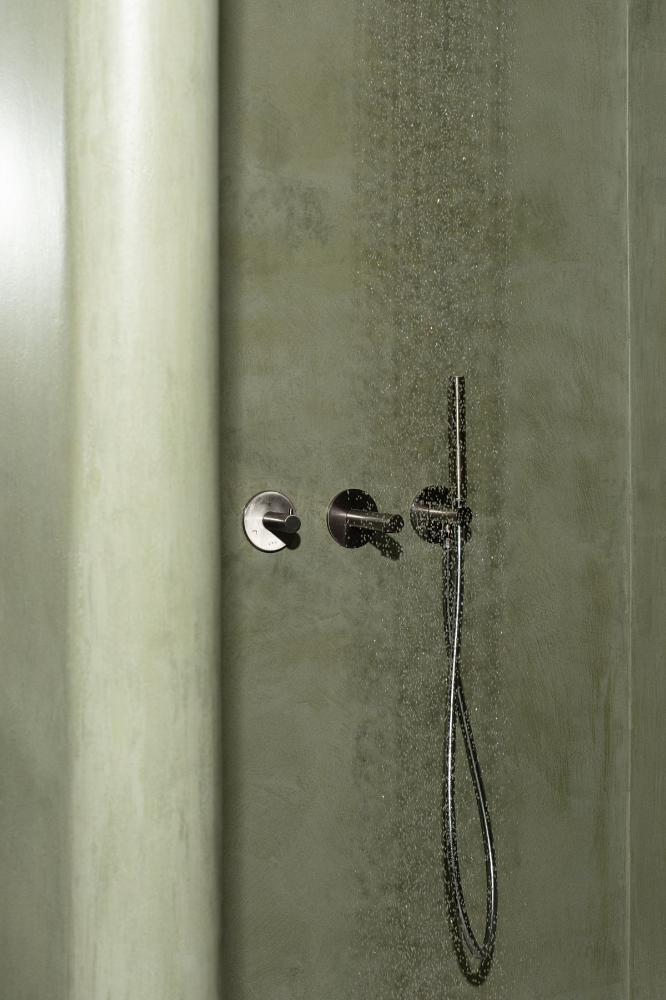

Kanyon
Residence / Istanbul
- category
- Residence
- services
- Concept and Brand Analysis
Visual Language
Project Coordination
Creative Direction & Design Execution - year
- 2022-2023
Kanyon Residence sits within one of Istanbul's most renowned residential complexes, a compact 90 m² apartment in the center of the city, conceived as a modern city home.




Concept
The brief oriented around to bring the energy of the metropolis inside, and each space carries its own trace of color, read continuously from one room to the next, the way a layered city reveals itself street by street.Color sets the register of each room.
The living room runs energetic and saturated, its charge echoed in a piece by Ahmet Oran; toward the bedroom the palette neutralizes into something calmer, held by the quieter linear work of Selim Birsel. In the bathroom, a green microcement made for the project meets a marble washbasin chosen to contrast with the wall.
Material & Tonality
- Material
- Oak veneer, cherry-red stained · lacquer · sliding panel system · bespoke microcement · marble
- Color usage
- Saturated red · metropolitan energy · a palette that neutralizes room to room · bathroom green, project-specific · lacquer white · natural oak
- Form language
- Curved partition · dissolved threshold · Prouvé-reference sliding panels · marble washbasin in deliberate contrast
- Layering
- The city brought inside — color accumulates and releases across rooms the way a metropolis reveals itself street by street · partition as primary organizer, visible from every position · door absorbed into surface · art in dialogue with palette






Through a carefully curated palette, custom details, and selected artworks, the project balances energy and calm, transforming a small footprint into a layered and expressive living environment that reflects the dynamism of Istanbul.